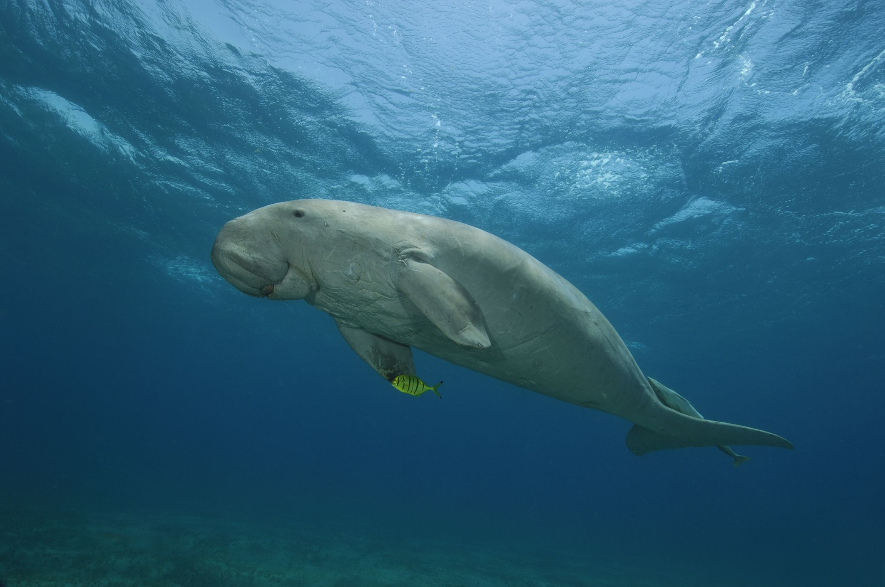
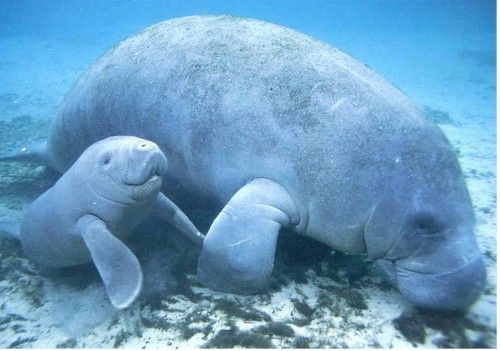

Dugong
Found mostly in Australia, Dugong are more closely related to elephants than to whales and dolphins.
Kingdom
Animalia
Phylum
Chordata
Class
Mammalia
Order
Sirenia
Family
Dugongidae
Genus
Dugong
Description
Growing up to 3 metres long and weighing over 400kg, Dugongs are fluke-tailed relatives of the manatee. They swim at a gentle pace of 10km/hr, by using their tail in a whale-like manner and their front-flippers like dolphins.
Habitat and Diet
Dugongs are primarily herbivorous, grazing on up to 30kg of seagrass a day. They eat both day and night, locating their food with the help of coarse, sensitive bristles on their upper lip.
These large creatures are found in warm water around coastlines, both north and south of the equator. They inhabit both freshwater and brackish water, where seagrass beds can be found. Australia hosts the largest number of Dugongs, with the Reef providing an important feeding ground.
Intelligence
The Dugong’s brain only makes up 0.1% of its bodyweight—300 grams of 400kg! Despite this, Dugongs have good memories and are able to remember specific feeding areas and return to them after travelling away. 
Dugong facts
1.
Dugongs only give birth every 3-7 years, and live for up to 70 years2.
The Dugong’s brain only weighs 300 grams of their 400kg!3.
Dugongs rarely communicate visually, due to their poor eyesight. Instead, they use sounds and physical touch.4.
Dugongs are more closely related to elephants than other marine mammals, such as whales and dolphins.5.
When Dugong calves need to be nursed, they suck on their flippers, almost like a child sucking on their thumb.6.
Dugongs sing to each other all the time, using chirps, whistles, barks and other sounds that echo through the water7.
Traditional Owners of the Great Barrier Reef have co-existed with dugongs for more than 60,000 years.8.
As Dugongs diets consist almost entirely of seagrass, they are referred to as ‘sea cows’.Behaviour and Reproduction
Though they do travel long distances, Dugongs are not a migratory species. They are solitary creatures, though can be found in pairs. Despite their solitary nature, Dugongs constantly communicate with one another through a series of echoing chirps, whistles, and barks.
Female Dugongs can give birth to one calf per pregnancy and birth every 3 to 7 years over their 70-year lifespan. Young Dugongs stay with their mothers for the first few months of life. Baby dugongs are also famously cute!
Threats
Since Dugong populations increase slowly, at greatest by 5% annually, their population is vulnerable. Changes in water quality and coastal development can lead to habitat degradation, ruining vital seabeds. Fishing practices, such as commercial netting, can also lead to accidental drownings. These stresses can cause female Dugongs to produce fewer offspring, lowering the population growth further.